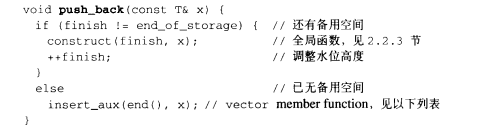
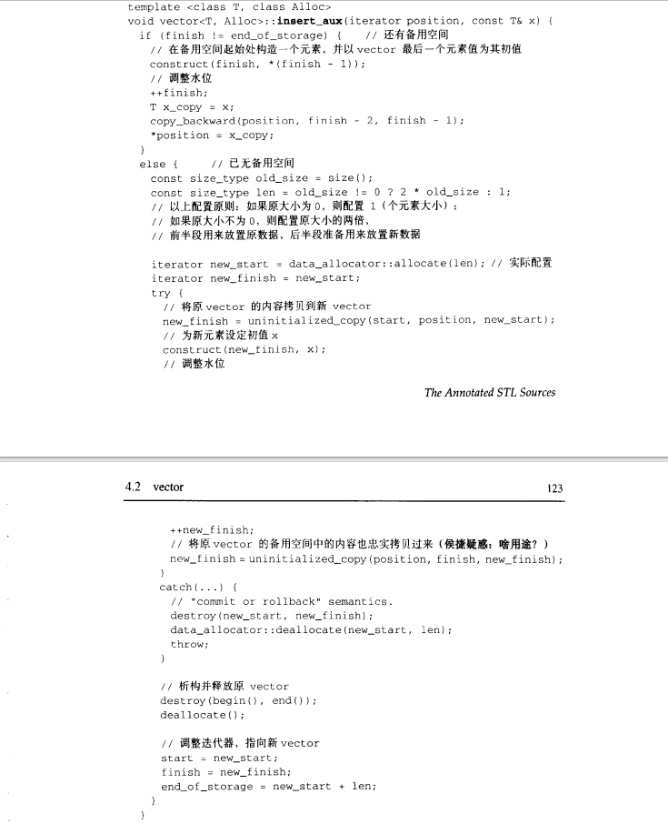

实现

vector 中有三个指针：指向使用空间的头（start）和尾（finish），以及可用空间的尾（end_of_storage）
可用空间：为了降低空间配置的速度成本，vector 实际配置的大小可能比客户需求的大一些（即capacity >= size）
默认的空间分配器是alloc
源码

vector 的数据（三个迭代器）是存储在栈上的，迭代器指向的数组是存放在堆上的
为什么不能把数据放到栈上
- 栈的空间宝贵且有限，不能无限存放元素
- 栈中数据的生命周期和函数挂钩
为什么 end 要在最后一个元素再后面的一个位置
- 当没有元素的时候，begin 和 end 指向一起，方便判空
迭代器
vector 的迭代器本质上就是一个指针，指向元素T
- 迭代器也可以用 [] 运算符进行访问：b[i] 等价于
*(b + i)
基本用法
构造函数
std::vector<int> vec0(2);
std::vector<int> vec1(3, 333);
std::vector<int> vec2{111, 222, 333};
// 拷贝构造（深拷贝）
std::vector<int> vec3(vec2.begin(), vec2.end());
std::vector<int> vec4(vec3);
std::vector<int> vec5 = vec3;
// 移动构造
std::vector<int> vec6(10, 100);
std::vector<int> vec7 = std::move(vec6);
std::cout << "vec6.size() = " << vec6.size() << std::endl; // 0迭代器
std::vector<int> vec;
// begin 返回容器第一个元素的迭代器，end 返回指向容器尾端的迭代器
// 当容器没有元素时，begin 和 end 相等
for (auto iter = vec.begin(); iter != vec.end(); ++ iter) {}
for (const auto iter = vec.begin(); iter != vec.end(); ++ iter) {}
// rbegin 返回一个容器最后一个元素的反向迭代器，rend 返回一个容器前端的反向迭代器
// 当反向迭代器 +1 时，会往前面移动
for (auto iter = vec.rbegin(); iter != vec.rend(); ++ iter) {}
// cbegin 返回容器第一个元素的迭代器，cend 返回指向容器尾端的迭代器
// 与 begin 和 end 不同的是，cbegin 为 const 类型，
// 而 begin 会根据返回值特化为 const 和非 const 类型
for (auto iter = vec.cbegin(); iter != vec.cend(); ++ iter) {}常用函数
std::vector<int> vec(10, 20);
// 返回容器第一个元素
std::cout << vec.front() << std::endl;
// 返回容器最后一个元素
std::cout << vec.back() << std::endl;
// 容器为空则返回 true，否则返回 false
std::cout << vec.empty() << std::endl;
// 返回容器元素的个数
std::cout << vec.size() << std::endl;
// 返回容器的容量
std::cout << vec.capacity() << std::endl;
// 返回容器可容纳的元素最大数量，可以理解是无穷大，具体与平台实现有关
std::cout << vec.max_size() << std::endl;
// 返回容器首元素的数据指针
int *p = vec.data();resize
将容器的 size 修改为指定大小（capacity 只会变大或不变，不会变小）
{
std::vector<int> vec(10, 0);
// 10
std::cout << "before vec capacity = " << vec.capacity() << std::endl;
// 20 > capacity，因此 size 和 capacity 一起变为 20
vec.resize(20);
// 20
std::cout << "after vec capacity = " << vec.capacity() << std::endl;
// 20
std::cout << "after vec size = " << vec.size() << std::endl;
}
{
std::vector<int> vec(40, 0);
// 40
std::cout << "before vec capacity = " << vec.capacity() << std::endl;
// 20 < capacity, 因此 size 变为 20，capacity 不变
vec.resize(20);
// 40
std::cout << "after vec capacity = " << vec.capacity() << std::endl;
// 20
std::cout << "after vec size = " << vec.size() << std::endl;
}shrink_to_fit
将 capacity 减小为指定大小（使得已有迭代器失效）
std::vector<int> vec(10, 0);
vec.push_back(1);
// 20
std::cout << vec.capacity() << std::endl;
auto iter = vec.begin();
vec.shrink_to_fit();
// 11
std::cout << vec.capacity() << std::endl;
// UB, 概率会 coredump
std::cout << *iter << std::endl;pop_back
删除容器最后一个元素（size 变小，capacity 不变）
std::vector<int> vec(10, 0);
vec.pop_back();
// 10
std::cout << f.capacity() << std::endl;
// 9
std::cout << f.size() << std::endl;assign
替换容器的元素
std::vector<int> vec(10, 100);
vec.assign(5, 1000);
// 可以用迭代器或者 initializer_list
// vec.assign(vec1.begin(), vec1.end());
// vec.assign({'1', '2', '3'});
// 1000 1000 1000 1000 1000
for (const auto& iter : vec) {
std::cout << iter << " ";
}
std::cout << std::endl;insert
在指定位置添加元素
std::vector<int> vec(10, 1000);
// 在 begin 的位置添加一个 10 的元素
vec.insert(vec.begin(), 10);
// 在 begin 的位置添加 10 个值为 10 的元素
vec.insert(vec.begin(), 10, 10);
// 将另一个容器的元素插入到指定位置
std::vector<int> vec1(10, 1111);
vec.insert(vec.begin() + 2, vec1.begin(), vec1.end()); emplace
将元素插入到指定位置（简化版 insert）
std::vector<int> vec(10, 1000);
// 1000 1000 1000 1000 1000 1000 1000 1000 1000 1000
for (const auto &iter : vec) {
std::cout << iter << " ";
}
std::cout << std::endl;
vec.emplace(vec.begin() + 6, 66);
// 1000 1000 1000 1000 1000 1000 66 1000 1000 1000 1000
for (const auto &iter : vec) {
std::cout << iter << " ";
}
std::cout << std::endl;swap
交换两个容器的内容（需要注意入参为 vector& other）
std::vector<int> vec(10, 0);
std::vector<int>{}.swap(vec);
// vec.swap(std::vector<int>{}); // error
// 0
std::cout << "vec size is " << vec.size() << std::endl;
// 0
std::cout << "vec capacity is " << vec.capacity() << std::endl;erase
删除内容，不改变容量大小（即size会发生变化，capacity不变）
// 删除指定位置的元素，返回值是一个迭代器，指向删除元素的下一个元素
i6.erase(i6.begin());
// 删除从 _First开始到 _Lsat位置的元素，返回值也是一个迭代器，指向最后一个删除元素的下一个位置
i6.erase(i6.begin() + 2, i6.begin() + 5);返回值：被删除元素后一个元素的迭代器（被删除元素的迭代器其实不会失效，而是指向被删除元素的下一个位置元素）
// 删除一个vector中所有等于2的数字的正确做法
vector<int> count{0,1,2,2,2,2,2,3,4};
for(auto iter=count.begin(); iter!=count.end(); ) {
if(2 == *iter) {
iter = count.erase(iter);
} else {
++ iter;
}
}erase实质是将迭代器后面的元素全部复制一遍，接着往前移动一个位置
因此当前位置的迭代器会指向原iter的后一位数字（所以其实是将后一部分的元素覆盖了前面部分的元素，比如说长为9的数组，删除掉前面5个数字，但当前下标为7和8位置的数据是不变的）
看了一下源码实现，如果是删除最后一个元素的话，就只会移动最后一个迭代器（end）
clear
清空容器中所有的元素，只改变 size，不改变 capacity
所以 clear 是不会释放容器的内存
时间复杂度分析
根据数据类型的不同，时间复杂度也会不同
- 如果容器中是POD或基本数据，那由于该元素没有析构函数，加之vector内部连续存储的特性，编译器的实现是可以在
O(1)完成clear()的 - 而如果是自定义数据，或者list或vector等类型，就要逐个去析构，时间复杂度就会到
O(n)
因此，clear在某些时候时间复杂度是很高的
- 在工程实践中，我们要思考是否每次都需要及时的clear掉一个容器
- 比如在后台服务中，有些容器类型的变量在符合某些条件下要进行clear()，后续逻辑中判断容器是空的，就不在用之进行某些逻辑（比如遍历它，进行某种操作）
- 其实也可以用一个bool标记来存储后续是否需要遍历该容器，待到本次请求的响应返回给client之后，再来清理这个容器也不迟
push_back 和 emplace_back
将对象放到vector中
时间复杂度分析（参考扩容，时间复杂度为O(n)）
实现原理
首先检查是否有备用空间，如果有就直接在备用空间上构造元素，并调整迭代器finish

PS：为什么还要独立开一个insert_aux函数：因为可能其他的函数（insert）也会用到插入元素的功能，所以进行抽象封装
如果没有可用空间，就扩大原有的vector（重新配置、移动数据、释放原空间）

PS：一旦空间重新分配，指向原vector的所有的迭代器都会失效
所以最好以数组下标作为记录，而不是迭代器作为记录
将对象放到容器中，在容器末尾就地构造元素（在末尾添加元素）
#include <iostream>
#include <vector>
class Test {
public:
Test() {std::cout << "Test" << std::endl;}
~Test() {std::cout << "~Test" << std::endl;}
Test(const Test &p) {std::cout << "Test copy" << std::endl;}
Test(const Test &&p) {std::cout << "Test move" << std::endl;}
Test(int age) {std::cout << "Test age" << std::endl;}
};
int main() {
std::vector<Test> v;
Test tt;
std::cout << "----------" << std::endl;
/////////////////////////////////////////////////传入左值
// v.push_back(tt); // 调用的是拷贝构造函数
std::cout << "----------" << std::endl;
// v.emplace_back(tt); // 调用的是拷贝构造函数
std::cout << "----------" << std::endl;
/////////////////////////////////////////////////传入右值
// v.emplace_back(Test(12));
std::cout << "----------" << std::endl;
/*
Test age
Test move（没有move构造函数，就会调用copy构造函数）
~Test
~Test // 程序结束的析构
传右值：这里调用了一次构造函数（先在外面构造一个临时对象，执行完这句话后析构），一次移动构造函数（在emplace_back里面），所以有两次析构，构造了两个对象
*/
// v.push_back(Test(12));
std::cout << "----------" << std::endl;
/*
Test age
Test move（没有move构造函数，就会调用copy构造函数）
~Test
~Test // 程序结束的析构
传右值：这里调用了一次构造函数（先在外面构造一个临时对象，执行完这句话后析构），一次移动构造函数（在push_back里面），所以有两次析构，构造了两个对象
*/
// v.emplace_back(12);
std::cout << "----------" << std::endl;
/*
Test age
~Test//程序结束的析构
传右值：这里调用了一次含参的构造函数
*/
// v.push_back(12);
/*
Test age
Test move（没有move构造函数，就会调用copy构造函数）
~Test
~Test//程序结束的析构
传右值：这里调用了一次构造函数（先在外面构造一个临时对象，执行完这句话后析构），一次移动构造函数（在push_back里面），所以有两次析构，所以有两次析构，构造了两个对象
*/
// 结论：
// 传左值：两者都是一样的：调用一次构造函数，再调用一次拷贝构造函数
// 传右值：如果是已经构造好的右值，比如说Test(12)，那么二者是相同的；但是如果没构造好，比如12，需要调用有参构造函数，那么emplace_pack效率更高一些
// 从另一个角度来看，说明push_back真的会构建一个临时对象（
vector<pair<int, int>> ret;
// ret.push_back(1,1)//会报错，因为没有构造一个临时对象
ret.push_back(pair<int, int>(1, 1)); //不会报错，因为构成了一个pair对象
ret.emplace_back(1, 1); //不会报错，因为直接在容器的尾部创建对象
}总结
push_back
- 对于右值，如果是已经构造好了的，就直接调用move或copy函数（优先调用move）；如果还没构造好（例如传入12，需要调用有参构造函数，隐性的转换为该类对象），那就先构造出对象，然后再调用move或copy函数（优先调用move）
- 对于左值，拷贝构造
emplace_back
- 对于右值， 如果是已经构造好了的，就直接调用move或copy函数（优先调用move）；如果还没构造好，就直接原地调用有参构造函数
- 对于左值，拷贝构造
emplace_back使用上的一个坑
#include <iostream>
#include <vector>
int main() {
std::vector<std::vector<int>> a;
a.push_back({1, 2});
a.emplace_back(std::vector<int>{1, 2});
a.emplace_back(std::initializer_list<int>{1, 2});
auto x = {1, 2};
a.emplace_back(x);
a.emplace_back({1,2,3,4,5,6,7}); // 这里会报错
}解释：
因为对于push_back来说，查看源代码发现它接收的是一个具体的value_type，即是固定的类型
再看看有关vector的构造，它没有写explicit，所以{1,2}可以隐式转换为vector
而对于emplace_back，它的源代码是一个模板函数，造成的结果就是所提供的参数{1,2}会做模板参数类型匹配，不会主动强转std::initializer_list
，需要你显式构造，或者用auto先推导一遍 但是这里模板推到不出来类型，所以就会报错


这里的value_type是typeof，即为T，可以理解为已经固定了的类型
at 和 []
二者是等价的
// at(索引)
vector<int> vec{1, 2, 3};
vec.at(1); // 等价于i6[1]
// at的源码
reference
at(size_type __n)
{
_M_range_check(__n);
return (*this)[__n];
}
// operator[]，返回第几个值
vec[1] = 10;[] 的越界访问是不会报错
- 每次访问都需要判断越界，是非常损耗性能的
- 因此越界访问到什么数据都是未知的
而at的越界访问是会报错的
- at 会检查是否越界
- 同时，at 的入参是 std::size_t，放入负数的话会被转为整数
扩容
为什么不是等差扩容
如果是等差扩容
假定每次扩容 m 个元素，总的元素个数是 n，则需要扩容 n/m 次
扩容的时间复杂度平均到每个元素上就是 O(n)
如果是成倍扩容
假定有 n 个元素,倍增因子为 m
那么完成这 n 个元素进行 push_back 操作，需要重新分配内存的次数大约为 logm(n)
第 i 次重新分配将会导致复制 m^i（也就是当前的 vector 大小）个旧空间中元素
因此 n 次 push_back 操作所花费的总时间约为 n*m/(m - 1)
扩容的时间复杂度平均到每个元素上就是O(1)（发现 m 为 2 时，时间复杂度最小，所以一般是 2 倍扩容）
为什么是 2 倍或者 1.5 倍扩容
理想的分配方案：是在第 n 次扩容时能复用之前 n-1 次释放的空间
- 而当 m=2 的时候每次扩容的大小都会大于前面释放掉的所有的空间
- 按照小于 2 倍方式扩容，多次扩容之后就可以复用之前释放的空间了
- 而超过 2 倍，就会导致空间的浪费，并且无法完美的使用到前面已经释放掉的内存
总结
- 使用 2 倍扩容时，每次扩容后的新内存大小必定大于前面的总和
- 使用 1.5 倍扩容时，在数次扩容后，就可以重用之前的内存空间
技巧
删除首个元素
vector<int> v1(10, 100);
v1.erase(v1.begin());释放空间
背景：一般情况下 vector 的内存占用空间只增不减
比如一开始分配了 10000 个字节，然后 erase 掉后面 9999 个，留下一个有效元素
但是内存占用仍为 10000 个（并且所有内存空间是在 vector 析构时候才能被系统回收）
clear 可以清空所有元素，但 vector 所占用的内存空间不变，无法保证内存的回收
所以如果想要清空 vector 所占用的内存，可以用 swap
std::vector<int> vec(100, 100);
{
std::vector<int> temp;
vec.swap(temp);
}
// vector<int>().swap(vec); // 或者这样
// vec.swap(vector<int>()); // error，swap 的入参是 T&
std::cout << vec.size() << std::endl;